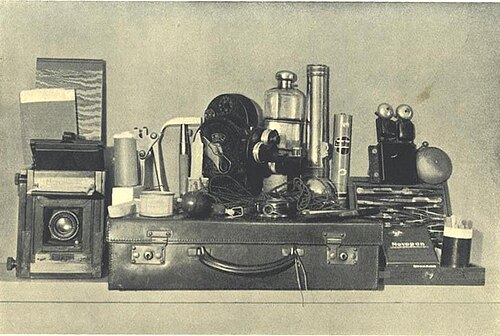

Brief History of Paranormal Research And Its Rise In Our Society
Paranormal research dates back to the 19th century, with many organizations investigating spiritual and paranormal activities. Ghost hunting, or paranormal investigating, became more popularized in the 2000s by television and media. Series such as Most Haunted, Ghost Hunters, and Ghost Adventures used a combination of highly geared tech and equipment with reality TV to mainstream this now widespread practice. These TV shows and other ghost-hunting platforms paved the way and influenced several individuals to pursue investigations of their own. Businesses of well-known haunted locations also began hosting ghost tours and encouraging investigators to book nights.
With this rise in the paranormal world, small businesses began to emerge, offering services and equipment for ghost-hunting in the early 2000s. Equipment such as EMF meters, motion sensors, and other detectors began to emerge profoundly, and to this day, more technological advancements are being made to more digital devices.
Harry Price, born in 1881 and passed in 1948, was the first paranormal researcher to apply science to ghost hunting. In 1926, Price set up a research lab, the National Laboratory of Psychical Research, where he had many gadgets and tools for research, even field-based research. Equipment such as thermographs, air testers, electroscopes, and other gadgets were some of the items he attained during his research. Price investigated himself, with his most well-known investigation being Borley Rectory.

Price’s ghost hunting kit, one of the first of its kind.
As the years progressed, more paranormal investigators emerged, with Ed and Lorraine Warren being among the most notable investigators in their field. The Warrens have authored numerous books on the paranormal and their investigations of reports of paranormal activity. They have conducted about 1,000 investigative cases during their career and have been involved in famously known paranormal claims such as the Enfield Poltergeist and the demonic possession in the Trial of Arne Cheyenne Johnson.
The Warrens are also best known for their involvement in the Amityville Horror case in 1976, where George and Kathy Lutz, a New York couple who moved to the house, claimed a malevolent presence haunted it. Some of their cases have even inspired filmmakers to create well-known horror films, such as the film series The Conjuring, and spin-off films, such as Annabelle, based on the actual doll that now remains in the Warren Museum.
Today, ghost hunting has evolved into a mixture of many mediums of science, technological advancements, and entertainment. With more tools such as the spirit box and thermal imaging camera, investigators are beginning to seek and capture more evidence of the paranormal world more accurately. TV shows and the rise of online communities on social media platforms have further fueled this spiritual interest in our society, making ghost hunting something accessible to intrigued enthusiasts all around the world.
Sources:
Wikipedia: Ghost Hunting | Psi Encyclopedia: Ghost Hunting | History.com: Historical Ghost Stories